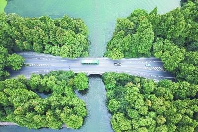
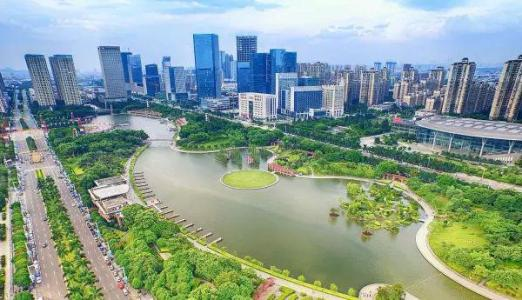

谱写生态环境保护事业新篇章
—— 作者：中共生态环境部党组
改革开放40年来，在党中央、国务院坚强领导下，我国生态环境保护事业发生历史性变革，取得历史性成就。特别是党的十八大以来，以习近平同志为核心的党中央把生态文明建设和生态环境保护摆在治国理政的重要位置，确立了习近平生态文明思想，谋划开展了一系列具有根本性、长远性、开创性的工作，推动我国生态环境保护从实践到认识发生了历史性、转折性、全局性变化。
如今，在行驶中无尾气排放，实现了“零排放、零污染”的纯电动公交车已成为杭州的一道亮丽风景线。图为一辆纯电动公交车行驶在杭州西湖景区的杨公堤上。新华社发
一是实践和认识不断深化，从提出走可持续发展道路、建设资源节约型和环境友好型社会、落实科学发展观，到将生态文明建设作为统筹推进“五位一体”总体布局和协调推进“四个全面”战略布局的重要内容，“绿水青山就是金山银山”等理念逐步深入人心，经济发展与生态环境保护的关系逐步走向协调统一。
二是法律法规体系不断健全，生态环境保护执法督察日益严格，基本形成以环境保护法为龙头的法律法规体系，中央生态环境保护督察成为推动地方党委和政府落实生态环境保护“党政同责，一岗双责”的硬招实招。
三是政策制度体系不断完善，从将保护环境确定为基本国策，到实行最严格制度最严密法治保护生态环境，“四梁八柱”性质的生态文明制度体系基本形成。
四是体制机制改革不断深化，环境保护行政机构历经五次重大跨越，2018年新组建生态环境部，正在开展省以下环保机构监测监察执法垂直管理和生态环保综合执法队伍改革，生态环境治理能力明显增强。五是生态环境治理力度不断加大，近年来发布实施大气、水、土壤污染防治三大行动计划，重大生态保护和修复工程进展顺利，生态环境质量持续改善。正如习近平总书记在庆祝改革开放40周年大会上讲的，“中国人民生于斯、长于斯的家园更加美丽宜人”。在解决国内环境问题的同时，我国还深度参与全球生态环境治理，积极引导应对气候变化国际合作，成为全球生态文明建设的重要参与者、贡献者、引领者。
河北省永清县探索“农业＋旅游”模式，推进农旅融合发展。图为游客在永清县海泽田生态农业观光园里采摘草莓。新华社发40年来，我国生态环境保护事业改革与发展积累了宝贵经验，必须倍加珍惜、长期坚持、不断丰富和发展。
一是坚持加强党对生态环境保护的领导，压实生态环境保护责任。改革开放40年，尤其是党的十八大以来，我国生态环境保护之所以取得历史性成就，根本在于以习近平同志为核心的党中央的坚强领导。各地区各部门层层压实责任，打通了生态环境保护责任落实的最后“一公里”。必须进一步落实领导干部生态文明建设责任制，严格实行“党政同责、一岗双责”，把生态环境保护各项任务落到实处。
二是坚持人与自然和谐共生，推动形成人与自然和谐发展的现代化建设新格局。人与自然是生命共同体，人类对大自然的伤害最终会伤及人类自身。在改革开放过程中，一些过度开发利用自然的惨痛教训表明，只有树立尊重自然、顺应自然、保护自然的生态文明理念，坚定不移走生产发展、生活富裕、生态良好的文明发展道路，才能还自然以宁静、和谐、美丽。
三是坚持绿水青山就是金山银山，协同推动经济高质量发展与生态环境高水平保护。我国40年经济社会发展成就证明，保护生态环境就是保护生产力、改善生态环境就是发展生产力。绿水青山既是自然财富、生态财富，又是社会财富、经济财富。必须贯彻新发展理念，坚持节约优先、保护优先、自然恢复为主的方针，实现经济社会发展和生态环境保护协同共进。
四是坚持良好生态环境是最普惠的民生福祉，满足人民日益增长的优美生态环境需要。40年来，人民群众从盼温饱到盼环保，从求生存到求生态，对优美生态环境的需要日益增长。做好生态环境保护工作，必须坚持以人民为中心，坚持生态惠民、生态利民、生态为民，重点解决损害群众健康的突出环境问题，还老百姓蓝天白云、繁星闪烁，清水绿岸、鱼翔浅底，鸟语花香、田园风光。
五是坚持山水林田湖草是生命共同体，科学系统实施生态环境治理。生态是统一的自然系统，是相互依存、整体循环的自然链条，人的命脉在田，田的命脉在水，水的命脉在山，山的命脉在土，土的命脉在林和草。必须按照生态系统的整体性、系统性及内在规律，进行整体保护、综合治理，全方位、全地域、全过程开展生态文明建设，维护生态平衡。
六是坚持建设美丽中国全民行动，动员全社会为生态环境保护作贡献。美丽中国是人民群众共同参与、共同建设、共同享有的事业。每个人都是生态环境的保护者、建设者、受益者。必须加强生态文明宣传教育，推动形成简约适度、绿色低碳、文明健康的生活方式和消费模式，加快构建和完善政府为主导、企业为主体、社会组织和公众共同参与的环境治理体系，打一场污染防治的人民战争。
当前，我国生态文明建设正处于关键期、攻坚期和窗口期。我们将坚持以习近平新时代中国特色社会主义思想为指导，认真贯彻习近平生态文明思想，增强“四个意识”，坚定“四个自信”，坚决做到“两个维护”，坚定不移将改革进行到底，加快构建生态文明体系，坚决打好打胜污染防治攻坚战，以更加坚实的步伐谱写生态环境保护事业新篇章。